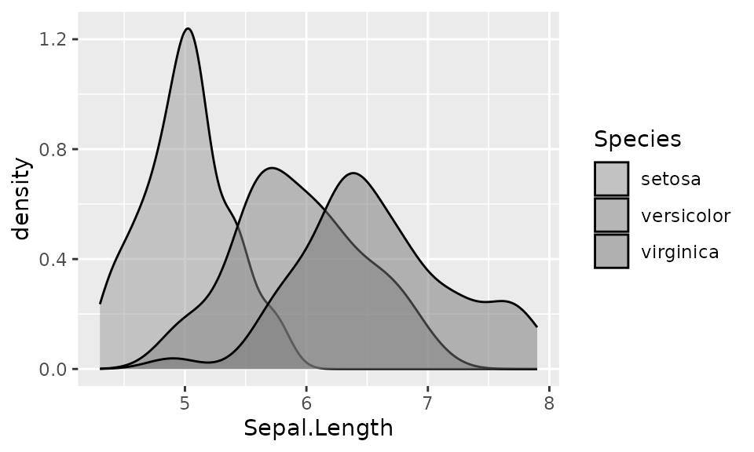
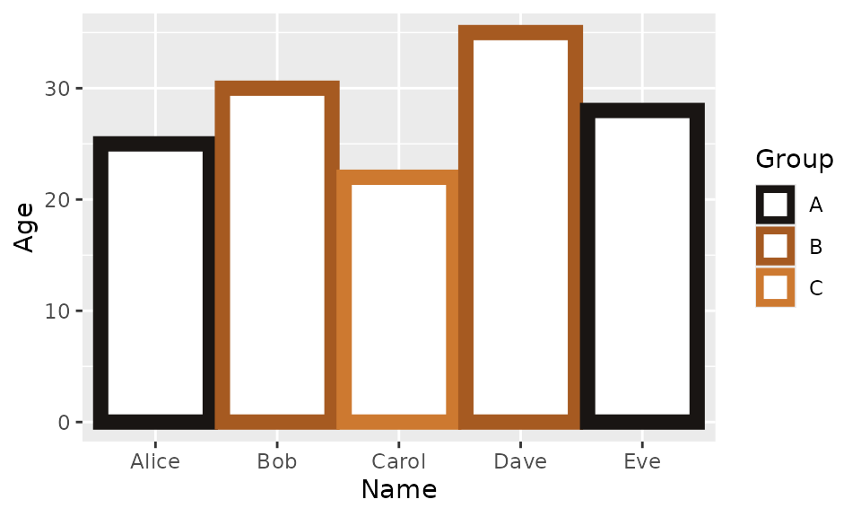
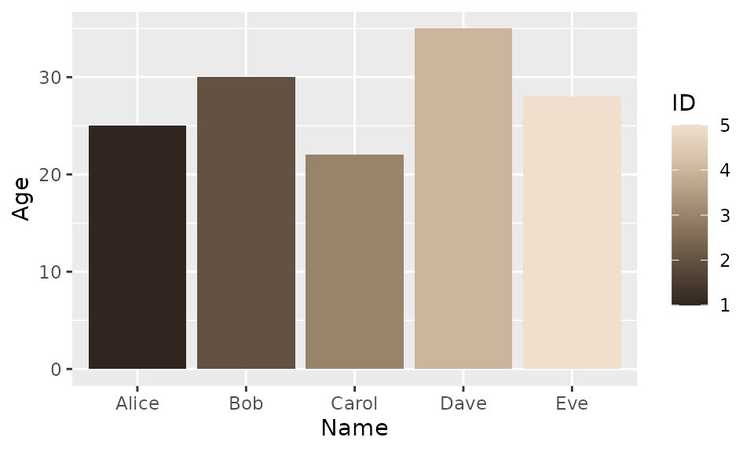
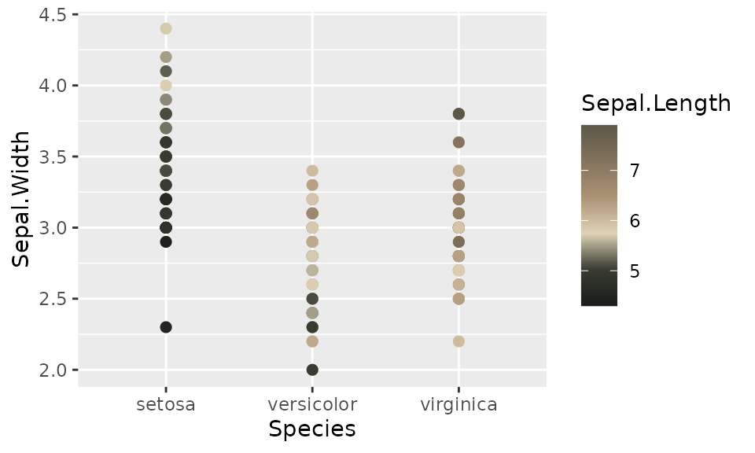

Install
Be sure to uncomment and execute the two lines of code. This will enable you to utilize the developmental versions of the package.
Names
names(dune_palettes)
#> [1] "arrakis" "atreides"
#> [3] "atreides2" "atreides3"
#> [5] "atreides4" "bene_gesserit"
#> [7] "corrino" "fermen"
#> [9] "fermen2" "harkonnen"
#> [11] "harkonnen2" "harkonnen3"
#> [13] "harkonnen4" "maythyknifechipandshatter"
#> [15] "sandworm"Data
df <- data.frame(
ID = 1:5,
Name = c("Alice", "Bob", "Carol", "Dave", "Eve"),
Age = c(25, 30, 22, 35, 28),
Group = c("A", "B", "C", "B", "A")
)Discrete
library(ggplot2)
ggplot(
data = iris,
mapping = aes(x = Sepal.Length, fill = Species)
) +
geom_density(alpha = 0.5) +
scale_fill_dune_d(name = "harkonnen2")
ggplot(
data = df,
mapping = aes(x = Name, y = Age, color = Group)
) +
geom_col(linewidth = 3, fill = "white") +
scale_color_dune_d(name = "fermen2")
Continious
ggplot(
data = df,
mapping = aes(x = Name, y = Age, fill = ID)
) +
geom_col() +
scale_fill_dune_c("harkonnen3")
ggplot(
data = iris,
mapping = aes(x = Species, y = Sepal.Width, color = Sepal.Length)
) +
geom_point(size = 2) +
scale_color_dune_c(name = "sandworm")